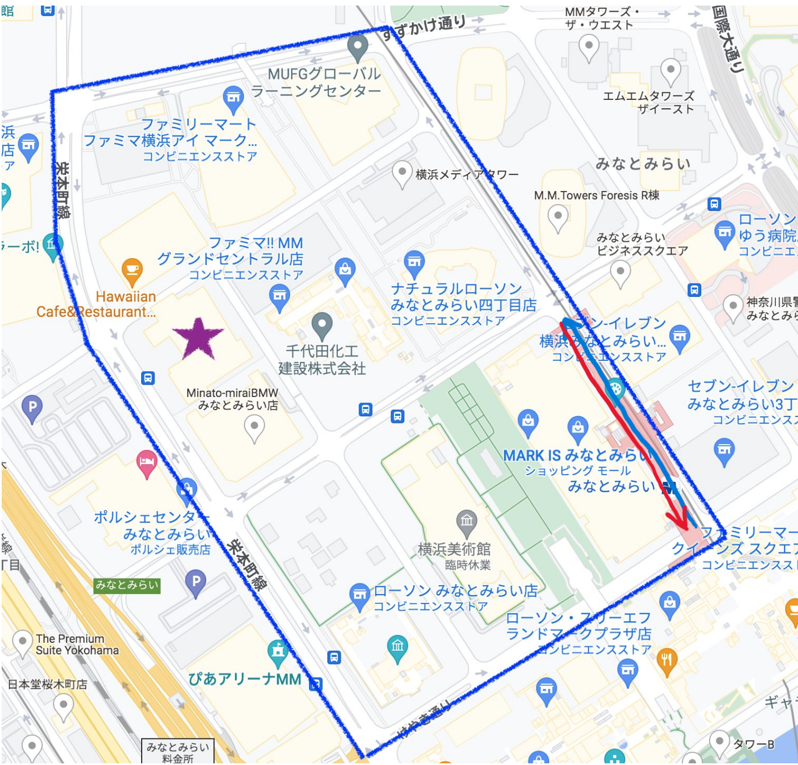
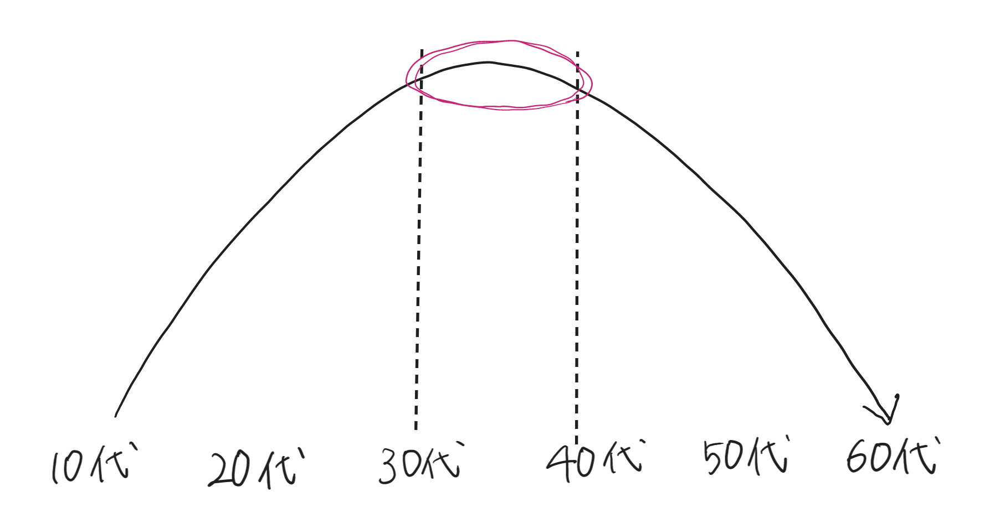

観察場所・内容・予想
10月18日に行った路上観察授業についてまとめる。
まず移動観察を行った場所については以下のマップの通りである。

みなとみらい駅の地下を改札から往復で撮影した。
観察内容は、アウターの着用状況と性別・年齢の関係性である。
10月18日の気温は最高が18.1℃、最低が16.7℃で、風も冷たく肌寒い日であった。
観察を行う前は、ほとんどの人がアウターを着用し、
秋色(茶、オレンジ、黄など)を取り入れている人が多いのではないかと予想した。
結果
観察結果は表の通りである。
| 男性 | 着ている | 25人 | 41人 |
| 着ていない | 16人 |
| 女性 | 着ている | 25人 | 32人 |
| 着ていない | 10人 |
- 予想に反して3～4割の人がアウターを着用していなかった。
- アウターの着用率に男女の差はあまり見られなかった。
- シャツだけの人や腕まくりをしている人、手に持っている人も見られた。

年代は個人の判断になってしまうが、30代、40代が一番多く、そこを頂点に山なりの形で他の年代が少ない印象であった。
男性は、年代が若くなると柄物のアウターを着ている人が多くなるように感じた。
女性は、年代が若くなると色味の明るいアウターを着る人が多くなるように感じた。
アウターの色味について
| 男性 | 明るい | 7人 |
| 暗い | 18人 |
| 女性 | 明るい | 16人 |
| 暗い | 9人 |
暗い・・・黒、グレー、紺（ジーンズ生地を含む）
明るい・・・それ以外
- 男性は暗い色のアウターを着ている人が多かった。
- 女性は明るい色、秋色のアウターを着ている人が多かった。
- 日向坂46のフラワーアート付近では、日向坂46のイメージカラー空色(水色)の服を着ている人も多かった。
考察
- 予想に反して着用率が低かった、腕まくり、手に持っている人
→外に比べ風も無く寒さを感じにくい屋内だったため、一時的にアウターをしまったり、持ったりしていたのではないか。
- 男性は暗い色、女性は明るい色のアウターが多い
→女性は季節やトレンドを意識してアウターを選ぶ人が多いのではないか。
→男性は機能性やシンプルさを意識してアウターを選ぶ人が多いのではないか。
- 30代、40代の人が多い、若い年代は柄物、明るい色味が多い
→30代、40代の人は、仕事（職場）に着て行けるような落ち着いた色味、無地のアウターを選ぶ人が多いのではないか。
→10代、20代の人は、流行を意識する人、かわいい・かっこいいと思う物を選ぶ人が多いのではないか。